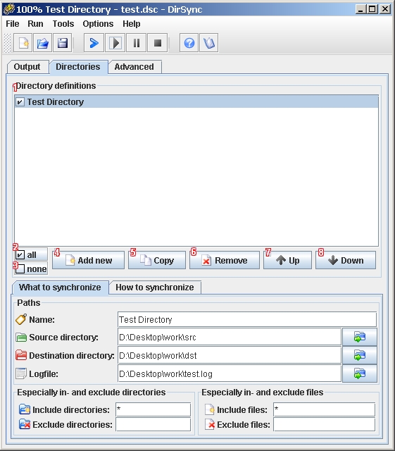

back
Synchronize can be configured
via a GUI. You can use the GUI to execute a synchronization, or you can
use the GUI to create a configuration file and run the synchronization
in console mode.
- Create a new
configuration.
- Open
a new configuration.
- Save
the current configuration.
- Quit
the program.
- Start a preview
of the
synchronization of the directories using this configuration.
- Start
synchronizing
directories using this configuration.
- Stop
the synchronization
after completing the current file.
- Swap
the paths of source and
destination directories in all
directory definitions
- Use Java
"Metal" look and feel; if deselected the
platform look and feel will be used.
(due too limitations in the JRE this doesn't work on linux - yet)
- Set
the default path
for configurations.
- Display help
for "Directory
Synchronize".
- Display information
about
"Directory Synchronize".
- Pause
the synchronization
after completing the current file.
- The global
logfile.
If you want global logging, you must specify a logfile. The path must
be given absolut, the directory must exist. The file doesn't have to
exist yet, it will be created. If the file already exists the log will
overwrite the file. If you don't specify a log file, logging will be
disabled.
- Browse
for the global
logfile or directory.
- The output
of the
synchronization.
- Scroll
the output of the synchronization automatically.
- The progress
of the overall synchronization.
- The progress
of the
synchronization of the current directory.
- The progress
of the
synchronization of the current file.

- "Directory
definitions": The directory
definitions to synchronize.
- Select all
directory definitions.
- Deselect all
directory definitions.
- "Add
new": Add a new directory
definition to the list.
- "Copy":
Copy an existing directory definition.
- "Remove":
Remove a directory definition from the list.
- "Up":
Move the selected directory definition up.
- "Down":
Move the selected directory definition down.
- "Name":
The name of this directory definition.
The name is only used for displaying purposes, but must be specified.
- "Source
directory": The source
directory for this directory definition.
The path of the source directory to synchronize to a destination
directory. Here you specify the directory with the original files.
- Browse for "Source
directory": Browse for the source directory.
- "Destination
directory": The destination
directory for this directory definition.
Here you specify the destination directory where to store the
backup-files.
You can specify the following wildcards for time and date (case
sensitive):
- <date>
for the current date, or
- <DD>
for the current day,
- <MM>
for the current month,
<YYYY>
for the current year.
<time>
for the current time, or
<hh>
for the current hour,
<mm>
for the current minute,
<ss>
for the current second.
- Browse for
"Destination
directory": Browse for the destination directory.
- "Logfile":
The logfile.
If you want logging for this directory, you must specify a logfile. The
path must be given absolute. The directory and file don't have to
exist, they will be created. If the file already exists the log will
overwrite the file. If you don't specify a log file, separate logging
for this directory definition will be disabled.
You can specify the same wildcards as for the "Destination directory".
- Browse
for "Logfile":
Browse for the logfile or directory.
- "Include
directories": Include this directory patterns in the
synchronization.
Here you can decide if only directories matching a
specified pattern
should be synchronized.
For example if you specify '*_new', only directories that end with
'_new' will be processed. You can use wildcards (i.e. '?'
and '*'). '?' means zero, or one character, '*' means zero, one, or
more characters. You can specifiy more than one pattern
seperated
by semicolons ';'
- "Exclude directories":
Exclude this directorie patterns from the synchronization.
Here you can decide if directories matching a
specified pattern should
NOT be synchronized.
- "Include
files": Include this file patterns in the
synchronization.
Here you can decide if only files matching a specified file pattern
should be synchronized.
For example if you specify '*.txt' only files
that end with '.txt' will be processed. You can use wildcards (i.e. '?'
and '*'). '?' means zero, or one character, '*' means zero, one, or
more characters. You can specifiy more than one file pattern seperated
by semicolons ';'.
- "Exclude files": Exclude this
file patterns from the synchronization.
Here you can decide if files matching a specified file pattern should
NOT be synchronized.
- "All":
Copies all files and
directories.
If a file already exists in the destination directory it will always be
overwritten with that one from the source directory. If you specify
this option, all other copy options will be ignored (you already copied
all files, what do you want more?).
- "New": Copies only new (not
existing in destination directory) files and directories.
Files that exist in the source directory but not in the destination
directory will be copied to the destination directory.
- "Larger": Copies only larger
files and directories.
If there already is a file with the same name in the destination
directory, it will only be overwritten with the file from the source
directory if its size is smaller than the size of the original file in
the source directory.
- "Modified": Copies only
modified files and directories.
If there already is a file with the same name in the destination
directory, it will only be overwritten with the file from the source
directory if its modified-date is older than the modified-date of the
original file in the source directory.
- "Only larger and modified":
Copies only larger AND modified files and directories.
If there already is a file with the same name in the destination
directory, it will only be overwritten with the file from the source
directory if its size is smaller and its modified-date is older than
the size and date of the original file in the source directory.
If you specify the option 'Copy larger' or 'Copy modified', this option
will be ignored (you already copied this files).
- "Include
subfolders": Includes
subfolders in this synchronization.
Here you can decide whether you want to synchronize the content of the
source directory including subfolders or not.
- "Verify synchronized files":
If this box is checked then after a file has been copied checksums of
the source and destination file are calculated and compared. If the
checksums don't match an "Verify error" will be reported.
- "Delete
files": Delete files not
existing in the source directory from the destination directory.
Files that have been deleted in the source directory, but still exist
in the destination directory will be deleted in the destination
directory.
- "Delete
directories": Delete
directories not existing in the source directory from the destination
directory.
Directories that have been deleted in the source directory, but still
exist in the destination directory will be deleted in the destination
directory.
- "Copy
to all directory definitions": Copies the current
options to all directory definitions.
- "Copy
to enabled directory definitions": Copies the current
options only to the enabled directory definitions.
If
you don't know what this advanced options are about -
chances are
good that you don't need them.
Handling of
timestamp related problems
Some filesystems don't store timestamps accurately (e.g.
FAT) and it is possible that
problems with the option "Modified" arise (e.g.
FAT always forces the timestamp down to even seconds; if you copy a
file with a source timestamp of "12:05:01" to FAT it will be stored
with a destination timestamp of "12:05:00". The next time you
synchronize this file with the "Copy modified" option it will be
copied
again
because the source timestamp is newer than the destination timestamp).
- "Write
timestamps back to source files":
If this box is checked then after a file has been copied the
destination timestamp is written back to the source file (the
timestamp of "12:05:00" would be written back to the source file. The
next time you synchronize this file with the "Modified" option it
will not
be copied again because both files have the same timestamp).
Doesn't work if the source file is write protected.
- "Specify max
seconds between timestamps to be equal":
If this box is checked then timestamps that differ x seconds
are treated as equal (the
timestamp of "12:05:00" would be treated as equal to the timestamp
"12:05:01". If you synchronize this file with the
"Modified" option it
will not
be copied because both files have an equal timestamp).
If this value is chosen too big files that are actually
different might be falsely considered to be identical.
- "Copy
symbolic links as files" or "Skip symbolic links":
Symbolic links are copied as files otherwise symbolic
links are skipped while copying.
If you already copied symbolic links and select later to skip
symbolic links the
symbolic links that have been copied to the target directories as files
will be deleted in the target directories.
Only applies if the source filesystem can handle symbolic
links
(UNIX, Linux, MacOS).
- "Reset to
default": Reset the advanced options to their default
values.
back